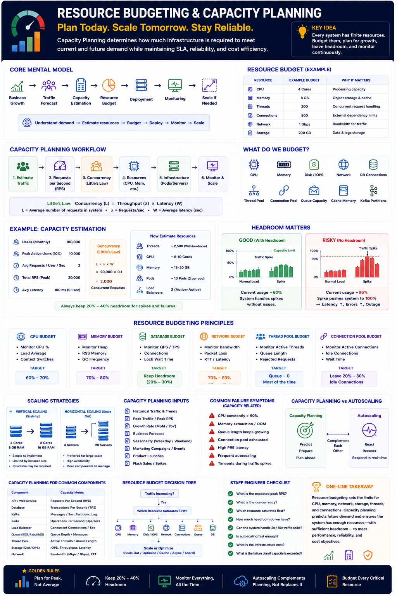

Traffic Forecasting • Resource Estimation • Infrastructure Sizing • Headroom
Core Idea — Most Underrated Staff/Principal Topic
Interviewers never ask "Explain Capacity Planning." Instead they ask disguised capacity questions — and Staff Engineers are expected to answer with data, not guesswork.
How many servers do we need?
Can this handle 10× traffic?
When should we autoscale?
How many Kafka partitions?
CPU/Memory per pod?
DB connections needed?
What's the cost if traffic doubles?
These are all Resource Budgeting & Capacity Planning questions.
Definition
Can it handle
current traffic?
Can it handle
future growth?
Can it do so at
acceptable cost?
Core Mental Model
Resource Budget Example — API Service
Every service has a budget. Track it or pay for it in outages.
What Resources Do We Budget?
| Resource | Why It Matters |
|---|---|
| CPU | Processing capacity |
| Memory | Object storage & cache |
| Disk / IOPS | Storage & IO throughput |
| Network | Bandwidth limit |
| DB Connections | DB capacity ceiling |
| Thread Pool | Concurrent request handling |
| Connection Pool | External dependency limits |
| Queue Capacity | Burst absorption |
| Cache Memory | Reduce DB load |
| Kafka Partitions | Consumer scalability |
Capacity Planning Workflow
Staff Engineer mindset: What traffic do we expect in 6 months? Not just "how many pods today?"
Capacity Planning Example — Using Little's Law
Now Estimate Resources
Threads
~2,500 (with headroom)
CPU
~8–10 Cores
Memory
~16–20 GB
Pods
~10 pods (2 per pod)
Load Balancers
2 (Active–Active)
Headroom — Always Keep 20–40% Buffer
Good — With Headroom
Risky — No Headroom
Never plan for exactly 100%. Always leave runway for spikes, retries, and incident recovery.
Resource Budgeting Principles
CPU Budget
Target: 60–70%
Memory Budget
Target: 70–80%
Database Budget
Keep 20–30% headroom
Network Budget
Target: 70–80%
Thread Pool
Queue ≈ 0 (most of the time)
Connection Pool
Leave 20–30% idle
Scaling Strategies
Vertical (Scale Up)
Horizontal (Scale Out)
Capacity Planning Inputs
Failure Symptoms
Capacity Planning vs Autoscaling
Capacity Planning
Predict → Prepare
Plan ahead
Autoscaling
React → Recover
Respond real-time
Staff Engineers do both. Autoscaling complements planning — it does not replace it.
Capacity Metrics by Component
| Component | Capacity Metric |
|---|---|
| API / Web Service | Requests/sec (RPS) |
| Database | Transactions/sec (TPS) |
| Kafka | Messages/sec, Partitions, Lag |
| Redis | Ops/sec |
| Load Balancer | Concurrent Connections/sec |
| Queue (SQS/RMQ) | Queue Depth / Messages |
| Thread Pool | Active Threads / Queue Length |
| Storage / Disk | IOPS, Throughput, Latency |
| Network | Bandwidth (Mbps / Gbps), RTT |
Resource Budget Decision Tree
System Design Interview Q&A
Q1: Traffic becomes 5×. What do you do?
Identify which resource saturates first. Scale pods, Kafka partitions, or read replicas accordingly. Ensure headroom.
Q2: CPU is only 50% but latency is high?
Check queue buildup, DB slowness, network RTT, lock contention, or connection pool exhaustion. CPU ≠ only bottleneck.
Q3: How many Kafka partitions should we create?
Current throughput × growth rate × future consumers over 12–24 months. Partitions = consumer parallelism ceiling. Over-provision.
Staff Engineer Checklist — Before Approving a Design
What is the expected peak RPS?
What is the concurrency?
Which resource saturates first?
How much headroom do we have?
Can the system survive 2× or 10× spikes?
Is autoscaling fast enough to react?
What is the infrastructure cost?
What is the failure plan if capacity is exceeded?
Capacity Planning Cheat Sheet
Interview Cheat Sheet
Principal Engineer Takeaway
How much traffic will we have in 12 months?
Which resource becomes the first bottleneck?
What is the cost of supporting 10× growth?
Capacity reserved for failures & regional outages?
Resource budgeting allocates limits for CPU, memory, network, storage, threads, and connections. Capacity planning predicts future demand and ensures the system has enough resources — with sufficient headroom — to meet performance, reliability, and cost objectives. This is the level of reasoning expected from Staff and Principal Engineers during system design interviews.
